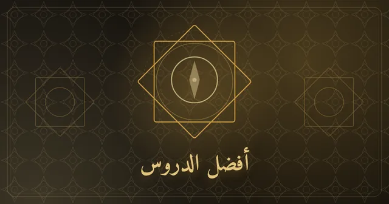
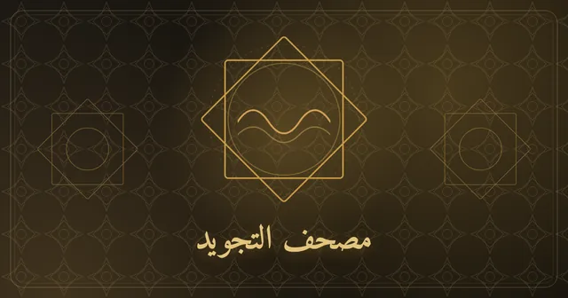
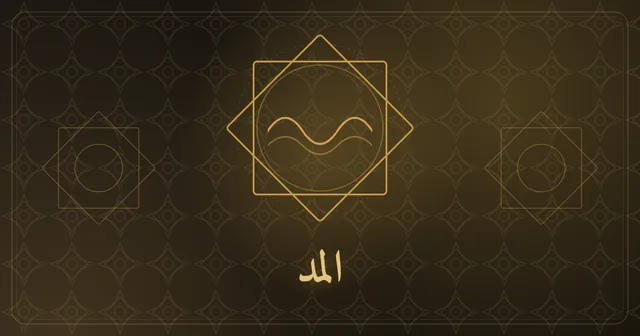
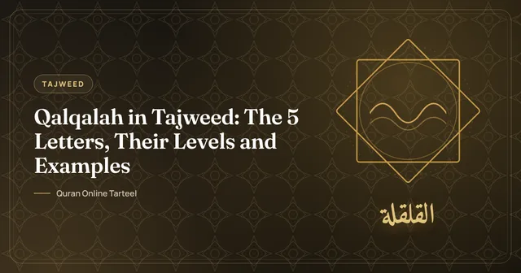
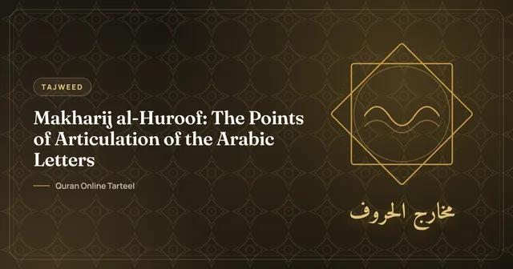
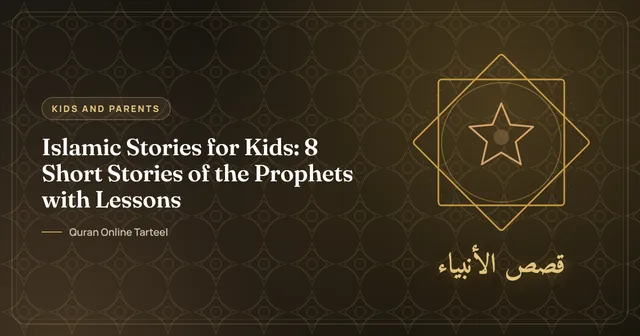
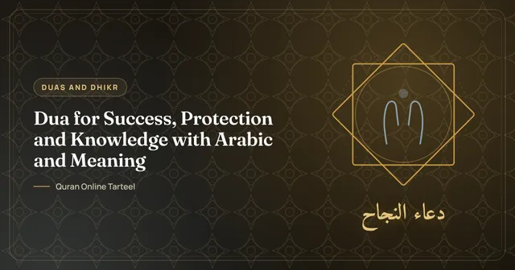
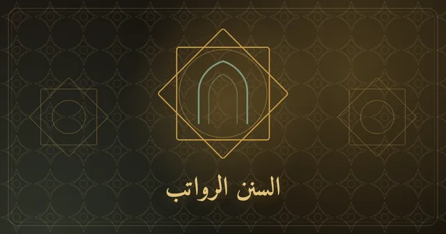
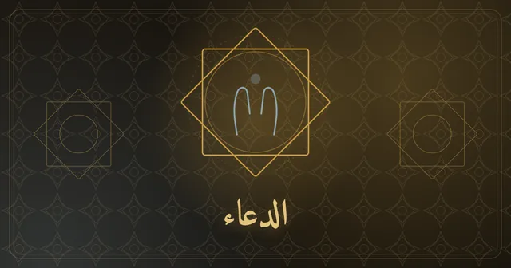
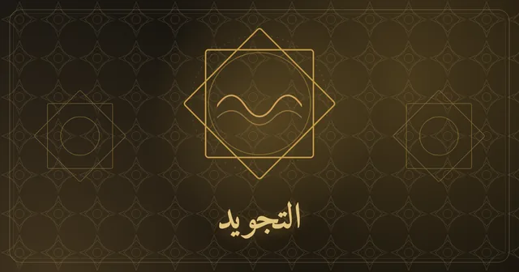

Online Quran Classes FAQ and Safeguarding
Clear answers to everything families ask before joining Quran Online Tarteel: how online classes work, our female teachers and safeguarding, the free trial, fees paid in advance, refunds, timings and learning at home.
Quran Online Tarteel: Quick Facts
The short answers families ask most before booking. Jump to a section below for the details.
| Question | Answer |
|---|---|
| Teachers | Female teachers only, 10+ years of experience |
| Students | Girls and boys under 18, and women |
| Format | Live, one to one, 25 to 30 minutes (Tafseer 45 to 60) |
| Languages | English, Urdu or Arabic |
| Plans | 2 days a week, 4 days a week or weekends |
| Free trial | 2 free classes, no card needed |
| Payment | Monthly, in advance, after the free trial |
| Refunds | 100% within the first 2 classes of a paid month, 50% by mid-month |
| Time zones | Classes booked in your local time |
About Our Classes
Can you really learn Quran online?
What courses do you offer?
Are classes one-to-one or in groups?
How long is each class?
Which language do teachers use?
Which app are classes on?
Do I need to know Arabic before starting?
How long does it take to learn the Quran?
Teachers and Safeguarding
Are all your teachers female?
Who can join Quran Online Tarteel?
Can parents watch their child's classes?
Do cameras need to be on?
Are classes recorded?
Will my child have the same teacher every time?
How is my personal information used?
Trial, Fees and Payment
Is there a free trial?
How much are the fees?
Why do you take fees in advance?
Can I get a refund?
How do I pay in Pakistan?
How do I pay from abroad?
Is there a family discount?
Are books, tests or certificates included?
Timings, Holidays and Ramadan
Which time zones do you teach in?
Can I change my class time?
What happens if the teacher misses a class?
Are classes held on Eid and public holidays?
What happens in Ramadan?
Learning at Home
How can I help my child practise at home?
Which surahs should my child memorise first?
Do you have free resources?
What should my child learn alongside the Quran?
Latest Guides from Our Blog
Free, practical articles on learning the Quran, Tajweed, Hifz, duas and salah, written by our academy.

Online vs Local Quran Classes: Which Is Better for Your Child?
An honest comparison of online classes and local mosque or madrasa classes, the pros and cons of each, and how many families combine both.

Learn Quran in Urdu, English or Arabic: Which Is Best?
The Quran is always recited in Arabic, but explanations can be in English, Urdu or Arabic. Here is how to choose the right one for your family.

How Long Does It Take to Learn the Quran? Realistic Timelines
Honest timelines for each stage, from the first letter to fluent Tajweed and full Hifz, for children and adults, with what speeds progress up.

Best English Translation of the Quran: 6 Compared (2027)
Six widely used English translations compared on style, accuracy and readability, which suits beginners, students and children, and Urdu options too.

Arabic Alphabet: 28 Letters with Names, Sounds and Forms
All 28 letters in one chart, the sounds English speakers find hard, how letters join and a simple plan to learn them in weeks.

Best Online Quran Classes: How to Compare Academies (2026)
A fair checklist for comparing online Quran academies, how the well-known names differ in model, and the questions to ask before you pay.

How to Learn Quran Online: A Step-by-Step Guide for Beginners
The right order to learn, how long each stage takes, what a good online class looks like and how to start this week, for children and adults.

Surah Al-Kahf on Friday: Benefits, Stories and Lessons
The authentic virtues of reading Al-Kahf every Friday, when to read it, its four stories and the trials they protect us from, plus a reading plan.

Colour-Coded Tajweed Quran Explained: What Each Colour Means
What the colours in a Tajweed mushaf usually mean, how beginners and parents can use one, and why it works best alongside a teacher.

Laylatul Qadr 2027: Last 10 Nights of Ramadan Guide and Dua
When the last ten nights are expected in 2027, the dua the Prophet taught for this night, its signs and a simple worship plan for each night.

Madd in Tajweed: Types of Madd with Examples and Counts
Every common type of madd on one page: how long to stretch it, how to spot it in the mushaf and examples from the surahs you recite in salah.

Qalqalah in Tajweed: Letters, Levels and Examples
The five echoing letters of Tajweed, when the bounce is light or strong, clear examples from Juz Amma and the mistakes to avoid.

Short Surahs for Kids: The First 14 to Memorize, in Order
The fourteen short surahs most children learn first, in a sensible order, with verse counts, one-line meanings and a weekly plan that works.

Surah Al-Mulk Benefits, Meaning and How to Memorize It
What authentic hadith say about Surah Al-Mulk, its main themes, the Sunnah of reciting it at night and a two week plan to memorise all 30 verses.

Tafseer for Beginners: What It Is and Where to Start
What tafseer means, how it differs from a translation, which trusted books to start with in English and Urdu, and a simple plan for your first months.

How to Prepare Kids for Ramadan: 15 Ideas Parents Can Use
Practice fasts by age, a good deeds chart, child-sized Quran goals, duas to learn and fifteen simple ideas to make Ramadan the best month of the year for kids.

Makharij al-Huroof: The 17 Points of Arabic Letters Explained
Where every Arabic letter comes from, in five areas and seventeen points, with a clear chart, the letters people mix up and how to practise.

Ramadan Quran Plan: How to Finish the Quran in Ramadan
Simple reading schedules to complete the Quran in Ramadan, with plans for fluent readers, beginners, children and busy mothers, and tips to start before Ramadan.

What Is Hifz? Meaning, Best Age to Start and Benefits
What Hifz means, the virtues of the hafiz in authentic hadith, the best age to begin, signs your child is ready and how part-time Hifz works.

Noon Sakinah and Tanween Rules: Izhar, Idgham, Iqlab, Ikhfa
The four rules that apply on almost every page of the Quran, with their letters, clear examples, a one-page chart and tips to remember them.

Islamic Stories for Kids: 8 Short Stories of the Prophets
Eight short bedtime stories from the Quran and authentic hadith, each with a simple lesson, its surah reference and questions to talk about.

Learning Quran as an Adult Woman: Where to Start
A gentle, practical guide for sisters starting or restarting the Quran: finding your level, fitting classes around life and staying motivated.

How to Perform Wudu Step by Step (with Dua After Wudu)
Every step of wudu in order, the four obligatory acts from the Quran, the dua to say afterwards, what breaks wudu and tips for children.

10 Benefits of Reciting the Quran from Quran and Hadith
Ten virtues of reciting the Quran from the Quran and authentic hadith, with references, and simple ways to make daily recitation a habit.

How to Choose a Female Quran Teacher Online: A Checklist
What qualifications matter, the questions to ask, how to judge a trial class and the safeguarding rules every family should expect.

Dua for Success, Protection and Knowledge (Arabic and English)
Authentic duas from the Quran and Sunnah for success, protection, beneficial knowledge and ease in hard tasks, each with Arabic, transliteration and meaning.

How to Memorize the Quran: A Realistic Hifz Plan and Timetable
The sabaq, sabqi and manzil system, sample timetables for children and adults, techniques that actually work and how to keep what you memorise.

Sunnah Prayers Explained: Sunnah Rakats of Each Namaz
A clear chart of fard, sunnah and Witr rakats for all five prayers, what sunnah muakkadah means, and voluntary prayers like Duha and Tahajjud.

How to Teach Quran to Kids at Home: 12 Tips for Parents
A realistic plan for busy parents: when to start, what to teach first, a 20 minute routine and 12 tips that keep children loving the Quran.

What Is Dhikr? Meaning, Types, Benefits and a Daily List
What dhikr means, why the Quran calls it the greatest act, the best words to say and a simple daily dhikr routine for busy families.

What Is Dua? Meaning, Etiquette and How to Make Dua
The meaning of dua, how the Prophet taught us to ask, the best times to make dua and short Quranic duas you can start using today.

What Is Tajweed? Meaning, Rules and Why It Matters
The meaning of Tajweed, why scholars call it a duty, the main rules in one table and the fastest way to learn it properly.

How to Pray Salah Step by Step: A Simple Guide for Beginners
Every position and every word of the prayer in order, with a rakat chart and tips for teaching children and new Muslims.

Noorani Qaida Guide: Lessons, Order and Tips
What each stage of the Noorani Qaida teaches and how parents can help.

Tajweed Rules for Beginners
The main rules of Tajweed explained simply, with examples.

How Many Rakats in Each Prayer?
A simple chart of the fard rakats of the five daily prayers.
Begin Your Quran Journey with 2 Free Classes
One short form is all it takes. A female teacher will be ready for you or your child, at a time that works in your country.
- Female teacher for every student
- Live 1-on-1, never a crowded group
- Times for US, UK, Canada, Australia and more
- No payment until you decide to continue
Reserve Your Free Classes
Takes 60 seconds. We reply within 24 hours.
JazakAllahu khayran!
Your request is in. We will message you on WhatsApp within 24 hours, in sha Allah. We are so happy you are starting this journey with us.